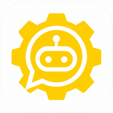

Menyalakan bot…
Kalau tidak nyala, cek 3 hal ini di Termux (sekali saja):
mkdir -p ~/.termux echo "allow-external-apps=true" >> ~/.termux/termux.properties termux-reload-settings
Lalu pastikan folder ~/NexusBot sudah ada, dan izin “Run commands in Termux environment” untuk NextBot aktif di Info Aplikasi → Izin.